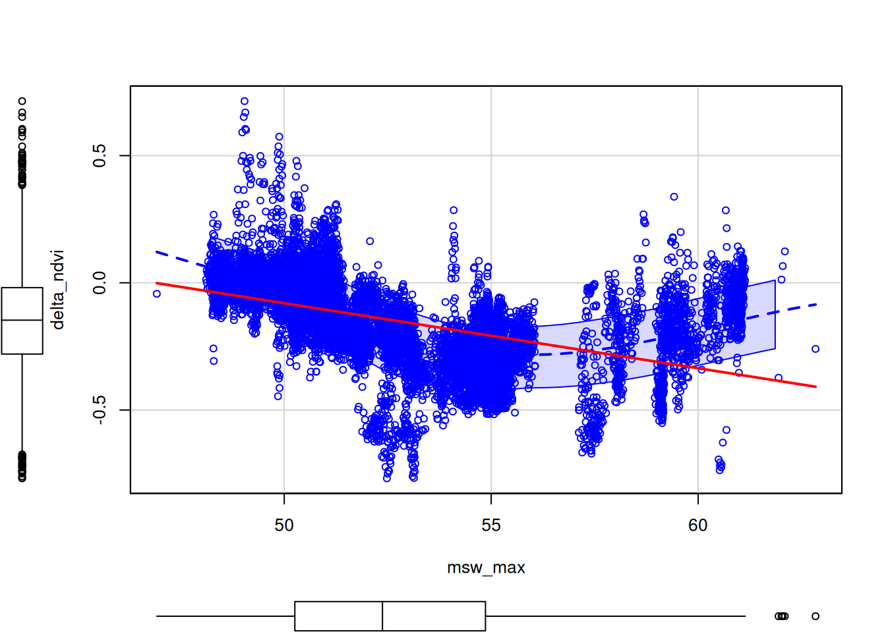
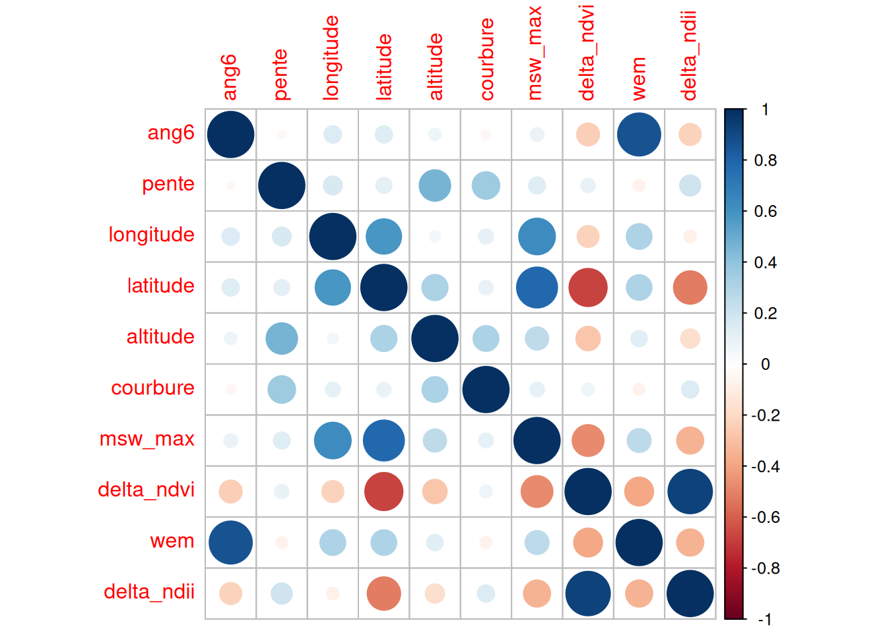

# donnees ####
dta <- read.csv("~/Documents/scriptR tests/datasummary.csv", sep = ",", header = TRUE)
dta <- dta[ ,c("ang6","pente","longitude","latitude","altitude","courbure","msw_max","delta_ndvi","wem","delta_ndii")]
# découpage des données en un jeu d'entrainement (70%) et un jeu de test (30%)
set.seed(1234)
train_id <- sample(nrow(dta), 0.7*nrow(dta))
dta_train <- dta[train_id, ]
dta_test <- dta[-train_id, ]
# lissage scatter plot
library(car)Le chargement a nécessité le package : carDatascatterplot(delta_ndvi~msw_max, data=dta_train,
regLine=list(method=lm, lty=1, lwd=2, col="red"))
# tableau des variances covariances
round(cor(dta),2) ang6 pente longitude latitude altitude courbure msw_max delta_ndvi
ang6 1.00 -0.03 0.14 0.14 0.07 -0.04 0.09 -0.24
pente -0.03 1.00 0.17 0.12 0.46 0.35 0.13 0.10
longitude 0.14 0.17 1.00 0.58 0.06 0.11 0.63 -0.23
latitude 0.14 0.12 0.58 1.00 0.32 0.09 0.78 -0.68
altitude 0.07 0.46 0.06 0.32 1.00 0.31 0.25 -0.28
courbure -0.04 0.35 0.11 0.09 0.31 1.00 0.10 0.08
msw_max 0.09 0.13 0.63 0.78 0.25 0.10 1.00 -0.47
delta_ndvi -0.24 0.10 -0.23 -0.68 -0.28 0.08 -0.47 1.00
wem 0.87 -0.07 0.31 0.31 0.13 -0.07 0.27 -0.39
delta_ndii -0.23 0.21 -0.07 -0.52 -0.17 0.14 -0.34 0.92
wem delta_ndii
ang6 0.87 -0.23
pente -0.07 0.21
longitude 0.31 -0.07
latitude 0.31 -0.52
altitude 0.13 -0.17
courbure -0.07 0.14
msw_max 0.27 -0.34
delta_ndvi -0.39 0.92
wem 1.00 -0.34
delta_ndii -0.34 1.00library(corrplot)corrplot 0.95 loadedcorrplot(cor(dta))
# influence de chaque parametre et R2
cor(dta$delta_ndvi,dta$ang6)^2[1] 0.05950251cor(dta$delta_ndvi,dta$msw_max)^2[1] 0.222333 # Les R2 sont tres proches de 0 donc une relation lineaire ne sera pas le bon modele
# on va tester tout de même